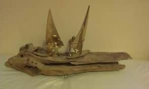

Paul Cox Windsurfing (Varsity) Trophy
Early Oxford Cambridge Windsurfing Varsity Match History
A complete set of Oxford Cambridge windsurfing Varsity Match history and SWA Team Event results to date is tabled below. The Windsurfing varsity Match was first sailed in 1982 at Grafham in very windy conditions that resulted in a 1-1 tie, but it did not become a regular fixture until the 1990s. There is a photograph of the 1982 press match report, written by Hugh Aldersey-Williams, in the CUCrC Historic Photo Gallery[ext-link] (Oxford won the 1st’s race and Cambridge the 2nd’s race).
Cambridge Half Blue status was awarded in 1997 – current criteria are published on the CUCrC website[ext-link]. Oxford currently do not get Half Blues.
A further piece of Oxford Cambridge windsurfing varsity match history concerns the Paul Cox Windsurfing (Varsity) Trophy presented by Chris Addison in 2005, is a piece of driftwood with some brass windsurfing figures on top. Oxford, captained by ex-Cambridge windsurfer Sandy Douglas, were the first holders. In 2016 the Jubilee Tankard, instituted in 1955 for Saturday dinghy fleet racing, was re-purposed for the Second Team (non-Blues) match – with Cambridge being the first holders.
All the years listed below are calendar years. The SWA Team Event Position is the Cambridge result – Oxford currently do not compete in this National event. An historic list of Cambridge teams is maintained on the History pages[ext-link] of the CUCrC website. There is currently no online list of Oxford teams. The overall score in Windsurfing Varsity Match history now stands at Cambridge 23 wins, Oxford 8, and 2 ties
| Year | Winner | Score | Winner (2nd Team) | Score | Place | SWA Team Event Position (Cambridge) |
|---|---|---|---|---|---|---|
| 2023 (33rd Match) | Cambridge | 4-1 | - | - | Grafham | DNC |
| 2022 | No Match (No Interest) | - | - | - | - | DNC |
| 2021 | COVID | - | COVID | - | - | COVID |
| 2020 | No Cambridge captain | - | No Cambridge captain | - | - | COVID |
| 2019 | No Oxford team | - | No Oxford team | - | - | DNC |
| 2018 | Oxford | 2-0 | Oxford | 2½-½ | Farmoor | Only one entrant |
| 2017 | Cambridge | 2-1 | Oxford | 2-1 | Grafham | No team event |
| 2016 | Cambridge | 1-0 | Cambridge | 1-0 | Grafham | 9th |
| 2015 | Tie | 3-3 | Farmoor | DNC | ||
| 2014 | Cambridge | 5-1 | Grafham | DNC | ||
| 2013 | Oxford | 3-0 | Farmoor | 12th | ||
| 2012 | Cambridge | 3-0 | Dahab (Egypt) | 6th | ||
| 2011 (25th Match) | Oxford | 2-1 | Hunstanton | DNC | ||
| 2010 | Oxford | Farmoor | 2nd | |||
| 2009 | Oxford | Dahab (Egypt) | 1st | |||
| 2008 | Cambridge | 3rd | ||||
| 2007 | Oxford | 3rd | ||||
| 2006 | Cambridge | 5th | ||||
| 2005 | Oxford | Grafham | 1st | |||
| 2004 | Cambridge | Farmoor | 2nd | |||
| 2003 | Cambridge | Grafham | ? | |||
| 2002 | Cambridge | West Wittering | ? | |||
| 2001 | Cambridge | 4th | ||||
| 2000 | Cambridge | 2nd - SWA Founded | ||||
| 1999 | Cambridge | 3rd | ||||
| 1998 | Cambridge | |||||
| 1997 | Cambridge | |||||
| 1996 | Cambridge | |||||
| 1995 | Cambridge | |||||
| 1994 | Cambridge | |||||
| 1993 | Cambridge | |||||
| 1992 | Cambridge | |||||
| 1991 | Cambridge | |||||
| 1990 | Cambridge | |||||
| 1989 | No Match | |||||
| 1988 | No Match | |||||
| 1987 | No Match | |||||
| 1986 | No Match | |||||
| 1985 | No Match | |||||
| 1984 | Cambridge | |||||
| 1983 | Oxford | Grafham | ||||
| 1982 | Tie | 1-1 | Grafham |